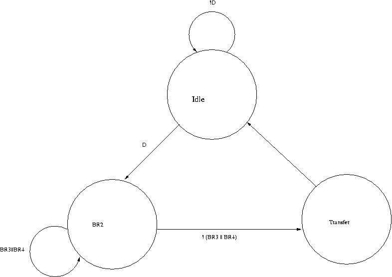

| Exceptions | Interrupts | |
| Cause | Internal to the running process | External to the running process |
| When are they handled? | When detected (mostly) | When convenient (mostly) |
| Are they maskable? | Almost never | Almost always |
| Priority | Same as the process that caused the exception. | Depends (on the priority of the interrupting device) |
| Context | Process | Handling is done withing the system context. |
Interrupts and exceptions are similar in how they are handled. To handle both, the machine has to be put into a consistent state and PC needs to be loaded with the address of the interrupt/exception handler.
Basic steps required to handle an exception/interrupt:
- Exception/interrupt is detected.
- The machine is put to a consistent state.
- PC and PSR (Program Status Register) of the process are saved (on the stack).
- PC is loaded with the address of the handler. (This address can be obtained by accessing the interrupt/exception vector table using the vector supplied by the event)
- Interrupt/exception handler is executed.
- Interrupt/exception handler returns back to the interrupted process. (PC and PSR of the interrupted process are restored)
In a split transaction bus, the bus is used only when information
needs to be transferred on the bus. The communicating devices release
the bus if there is no need to transfer data on the bus. Hence,
multiple concurrent bus transactions can take place simultaneously,
which likely improves system performance.

The input and output signals of the controller are:
| Signal | Type | Function |
| DEV | Input | Asserted when the device needs to initiate a bus transaction |
| BGin | Input | Incoming bus grant signal, asserted by the priority arbitration unit |
| BBSYin | Input | Asserted by the current bus master. Negative edge indicates the end of a bus cycle. |
| MSYN | Input | Master-side handshaking signal that controls the bus transaction between the bus master and the slave |
| SSYN | Input | Slave-side handshaking signal that controls the bus transaction between the bus master and the slave |
| BRout | Output | Asserted to request the bus. Goes to the priority arbitration unit. |
| SACK | Output | Asserted by the device that has won the arbitration |
| BBSYout | Output | Same as BBSYin |
| BGout | Output | Asserted when the controller needs to pass the bus grant signal down the daisy chain. |
1. Let's say device controller D1 is in BGout state. This means that some device D2 that is down the same daisy chain as D1 had requested and is granted the bus. Let's say the device of D1 asserts the DEV signal while D1 is in BGout state. D3 will eventually receive the BGin signal and transition to the SACK state. It will take some time for the SACK signal to travel to the priority arbitration unit. The SACK signal probably reaches D1 before it reaches the priority arbitration unit. Hence, when the SACK signal reaches D1 the BGin input of D1 is still being asserted. Therefore, upon receiving the SACK signal D1 will immediately transition to IDLE to BRout to SACK states. Hence, both D1 and D3 will be asserting the SACK signal which is not desirable. A simple solution that fixes this race condition is not transitioning to IDLE state if the BGin signal is still high. This gives us the state diagram which Dr.Patt showed in class.
2. This race condition is a little bit more subtle. From the
PAU side. the PAU asserts BGj which works its way down the daisy chain to
all devices at BRj. Before SACK is asserted, a controller asserts
BRk, where k is higher priority than j. PAU now asserts BGk, and you
have two BG signals propagating, which will result in two controllers
thinking they are the next bus master.
Solution: PAU latches BR signals when it sees NOT-SACK, indicating it is okay
to grant the bus again. NOT-SACK is also gated (after sufficient delay) with
the BG signals, guaranteeing that a BG signal cannot be asserted until after
PAU logic has taken effect. Any subsequent BR signal does not get latched and
so can not affect the PAU logic.
There are two ways of calculating X:
- Disk transfer requests are queued up in the disk's controller. When a transfer completes, the disk interrupts the LC-2
and pulls another transfer request off its queue. Thus the disk is always operating at its full transfer rate.
A disk running at full speed will cause (2^18 bytes per second) / (2 pages per transfer * 2^12 bytes per page) = 32 transfers per second = X Number of disks will be floor(200/(2^5)) = 6.
-
Disk transfer requests are not queued. When a transfer completes, the disk interrupts the LC-2. During the 5ms that the LC-2
is processing the interrupt, the disk is idle. At the end of the 5ms period, the disk is given another transfer request a
nd the disk resumes operation.
Total time to perform one transfer = Time to transfer the data + Time to service the interrupt = 1/32 sec + 5msec Maximum number of transfers per second = reciprocal of the above number = 27.59 = X Number of disks will be floor(200/27.59) = 7
- The solution is shown below.

- It is possible. Consider a case where device 3 and 4 just alternate the bus.
- The solution is shown below.

(As stated in the question, cycle counts assume a 16-way interleaved memory so that a new access can be started each cycle. Also, the adder and multiplier are pipelined.)
a) Scalar processor
MOVI R0, 100 (1 cycle)
MOVA R5, A (1 cycle)
MOVA R6, B (1 cycle)
MOVA R7, C (1 cycle)
MOVA R8, D (1 cycle)
LOOP LD R1, (R6)+ (11 cycles)
LD R2, (R7)+ (11 cycles)
LD R4, (R8)+ (11 cycles)
MUL R3, R1,R2 (6 cycles)
ADD R4, R3,R4 (4 cycles)
SHR R4, R4 (1 cycle)
ST R4,(R5)+ (11 cycles)
DECBNZ R0, LOOP (2 cycles)
5*1 + 100*(11 + 11 + 11 + 6 + 4 + 1 + 11 + 2) = 5705 cycles
Vector Processor:
Solution A: The loop could be split into two parts as 64 & 36 Assume the vector code looks as follows: (This assumes that the addressing mode VLOAD B+64,V0 exists - if it doesnt, then you would need 4 + 3 cycles using a pipelined adder to add 64 to A,B,C,D)
MOVI VLEN, 64 (1 cycle)
MOVI VSTR, 1 (1 cycle)
VLOAD V0, B (11 + 63 cycles)
VLOAD V1, C (11 + 63 cycles)
VMULT V2,V0,V1 (6 + 63 cycles)
VLOAD V3, D (11 + 63 cycles)
VADD V4, V2,V3 (4 + 63 cycles)
VSHR V5, V4 (1 + 63 cycles)
VST V5, A (11 + 63 cycles)
MOVI VLEN, 36 (1 cycle)
VLOAD V0, B+64 (11 + 35 cycles)
VLOAD V1, C+64 (11 + 35 cycles)
VMULT V2, V0,V1 (6 + 35 cycles)
VLOAD V3, D+64 (11 + 35 cycles)
VADD V4, V2,V3 (4 + 35 cycles)
VSHR V5, V4 (1 + 35 cycles)
VST V5,A+64 (11 + 35 cycles)
b) Vector processor without chaining (vector instructions done serially)
2 + (64*7 + 10+10+5+10+3+10) + 1 + (36*7 + 10+10+5+10+3+10) = 799 cycles
c) Vector processor with chaining, 1 port to memory
Chaining means the machine begins the next operation as soon as
the operands are ready.
First part:
|-1-|-1-|--11--|---63---|--11--|---63---|--11--|---63---|--11--|---63---|
|-6-|---63---| |-4-|---63---|
|-1-|---63---|
Second part:
|-1-|--11--|--35--|--11--|--35--|--11--|--35--|--11--|--35--|
|-6-|--35--| |-4-|--35--|
|-1-|--35--|
Chaining, in this instance, hides the VMULT, VADD, and VSHL operations.
Memory becomes the primary bottleneck.
483 cycles
d) Vector processor with chaining; 2 loads, 1 store per cycle
First part:
|-1-|-1-|--11--|---63---|
|--11--|---63---|
|-6-|---63---|
|--11--|---63---|
|-4-|---63---|
|-1-|---63---|
|--11--|---63---|
#cycles = 1 + 1 + 11 + 63 + 11 + 4 + 1 + 11 + 63 = 166
Second part:
|-1-|--11--|--35--|
|--11--|--35--|
|-6-|--35--|
|--11--|--35--|
|-4-|--35--|
|-1-|--35--|
|--11--|--35--|
#cycles = 1 + 11 + 35 + 11 + 4 + 1 + 11 + 35 = 109
Total cycles = 166 + 109 = 275 cycles
Solution B: The loop could be split into two equal parts as 50 & 50
MOVI VLEN, 50 (1 cycle)
MOVI VSTR, 1 (1 cycle)
VLOAD V0, B (11 + 49 cycles)
VLOAD V1, C (11 + 49 cycles)
VMULT V2, V0, V1 (6 + 49 cycles)
VLOAD V3, D (11 + 49 cycles)
VADD V4, V2,V3 (4 + 49 cycles)
VSHR V5, V4 (1 + 49 cycles)
VST V5, A (11 + 49 cycles)
VLOAD V0, B+50 (11 + 49 cycles)
VLOAD V1, C+50 (11 + 49 cycles)
VMULT V2, V0,V1 (6 + 49 cycles)
VLOAD V3, D+50 (11 + 49 cycles)
VADD V4, V2,V3 (4 + 49 cycles)
VSHR V5, V4 (1 + 49 cycles)
VST V5, A+50 (11 + 49 cycles)
b) Vector processor without chaining (vector instructions done serially)
2 + (50*7 + 10+10+5+10+3+10) + (50*7 + 10+10+5+10+3+10) = 798 cycles
c) Vector processor with chaining, 1 port to memory Again, this would save only 1 cycle over solution A, since the first load for the second part must wait till the store of the first part finishes Total = 482 cycles
d) Vector processor with chaining; 2 loads, 1 store per cycle
|-1-|-1-|-11-|-----49-----|
|-11-|-----49-----|
|-6-|-----49-----|
|-11-|-----49-----| ** LD D would need to wait for LD B to finish
|-4-|-----49-----|
|-1-|-----49-----|
|-11-|-----49-----|
|-11-|-----49-----|
|-11-|-----49-----| ** LD C+50 would need to wait till the LD D from the first part finishes
|-6-|-----49-----|
|-11-|-----49-----| ** LD D+50 would need to wait for LD B+50 to finish
|-4-|-----49-----|
|-1-|-----49-----|
|-11-|-----49-----|
1 + 1 + (11 + 49) + 11 + 4 + 1 + 1 + (11 + 49) + 11 + 4 + 1 + (11 + 49) = 215 cycles
Assume an ADD operation is executed like this in the pipeline: |-F-|-D-|-A-|-A-|-A-|-A-|-S-|
and a MUL operation is executed like this in the pipeline: |-F-|-D-|-M-|-M-|-M-|-M-|-M-|-M-|-S-|
F: Fetch, D: Decode, A: Execute stage (for ADD), M: Execute stage for MUL, S: Store result (Write-back)
a) ADDs require 7 cycles (fetch, decode, 4 execute, store), and MULs require 9 cycles (fetch, decode, 6 execute, store). For
3 ADD instructions and 3 MUL instructions, the execution time is 3*7 + 3*9 = 48 cycles.
b) Pipeline with scoreboarding:
Assumptions: - one instruction fetched per cycle
- the adder and multiplier are pipelined
- no forwarding: the destination register is marked valid in the S stage
(a dependent instruction starts executing after the S stage of
the instruction it depends on)
|-F-|-D-|-M-|-M-|-M-|-M-|-M-|-M-|-S-|
|-F-|-D-|-D-|-D-|-D-|-D-|-D-|-D-|-A-|-A-|-A-|-A-|-S-|
|-F-|-F-|-F-|-F-|-F-|-F-|-F-|-D-|-A-|-A-|-A-|-A-|-S-|
|-F-|-D-|-M-|-M-|-M-|-M-|-M-|-M-|-S-|
|-F-|-D-|-D-|-D-|-D-|-D-|-D-|-D-|-A-|-A-|-A-|-A-|-S-|
|-F-|-F-|-F-|-F-|-F-|-F-|-F-|-D-|-M-|-M-|-M-|-M-|-M-|-M-|-S-|
26 cycles
With forwarding:
|-F-|-D-|-M-|-M-|-M-|-M-|-M-|-M-|-S-|
|-F-|-D-|-D-|-D-|-D-|-D-|-D-|-A-|-A-|-A-|-A-|-S-|
|-F-|-F-|-F-|-F-|-F-|-F-|-D-|-A-|-A-|-A-|-A-|-S-|
|-F-|-D-|-M-|-M-|-M-|-M-|-M-|-M-|-S-|
|-F-|-D-|-D-|-D-|-D-|-D-|-D-|-A-|-A-|-A-|-A-|-S-|
|-F-|-F-|-F-|-F-|-F-|-F-|-D-|-M-|-M-|-M-|-M-|-M-|-M-|-S-|
24 cycles
c) Tomasulo's algorithm Just for your reference
Assumptions: - one instruction fetched per cycle
- the adder and multiplier are pipelined
- multiple instructions can finish (store) in the same cycle
- no forwarding
|-F-|-D-|-M-|-M-|-M-|-M-|-M-|-M-|-S-|
|-F-|-D-|- -|- -|- -|- -|- -|- -|-A-|-A-|-A-|-A-|-S-|
|-F-|-D-|-A-|-A-|-A-|-A-|-S-|
|-F-|-D-|-M-|-M-|-M-|-M-|-M-|-M-|-S-|
|-F-|-D-|- -|- -|- -|- -|- -|- -|-A-|-A-|-A-|-A-|-S-|
|-F-|-D-|- -|- -|- -|- -|- -|- -|- -|-M-|-M-|-M-|-M-|-M-|-M-|-S-|
Note that |- -| means the instruction waits in a reservation station.
21 cycles
With forwarding:
|-F-|-D-|-M-|-M-|-M-|-M-|-M-|-M-|-S-|
|-F-|-D-|- -|- -|- -|- -|- -|-A-|-A-|-A-|-A-|-S-|
|-F-|-D-|-A-|-A-|-A-|-A-|-S-|
|-F-|-D-|-M-|-M-|-M-|-M-|-M-|-M-|-S-|
|-F-|-D-|- -|- -|- -|- -|- -|-A-|-A-|-S-|
|-F-|-D-|- -|- -|- -|- -|- -|-M-|-M-|-M-|-M-|-M-|-M-|-S-|
19 cycles